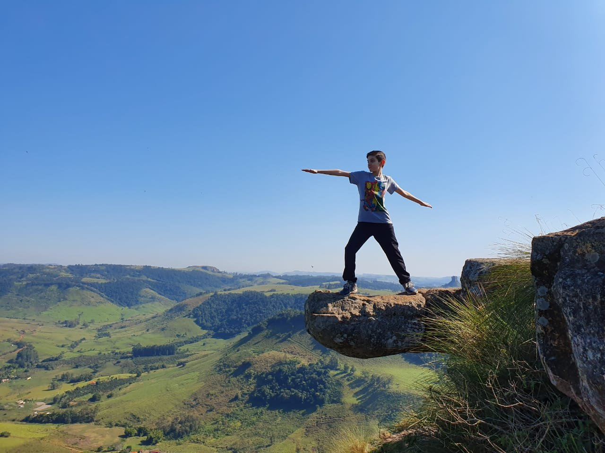

Atrações Turísticas
O Morro do Gavião é conhecido por suas vistas deslumbrantes e trilhas para caminhadas. Descubra algumas das principais atrações:



Gastronomia Local
Após um dia de aventuras, aproveite a deliciosa culinária local. Experimente pratos típicos como:
- Peixe na brasa
- Galinhada
- Doces caseiros
Vídeo do Local
Mapa do Morro do Gavião
Dicas de Viagem
Para aproveitar ao máximo sua visita ao Morro do Gavião:
- Leve água e lanches para as trilhas.
- Use roupas leves e confortáveis.
- Respeite a natureza e mantenha o local limpo.